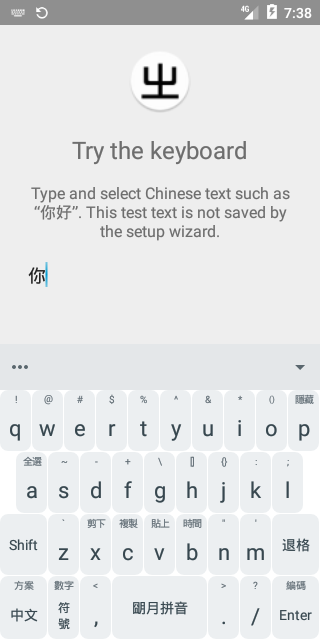

01 / LAYOUT
全键盘，也有九键
内置全键盘与朙月拼音九键，在不同输入场景中选择顺手的布局。
让熟悉的拼音与顺手的键盘，
陪你写下每一个想法。
xrime 基于 Trime 与 Rime，带来独立安装的 Android 输入体验。全键盘、九键拼音与可定制的方案，在这里相遇。

熟悉的拼音体验，加上 Rime 的灵活配置。为日常输入保留更多选择。
内置全键盘与朙月拼音九键，在不同输入场景中选择顺手的布局。
在设置中选择简体或繁体，按照自己的阅读与书写习惯输入。
继承 Trime 与 Rime 的方案和主题能力，为输入保留更多可能。
选择与你的设备匹配的 APK。